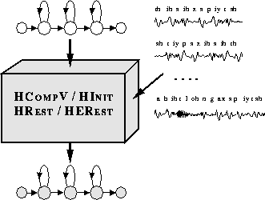

In chapter 7 the various types of HMM were described and the way in which they are represented within HTK was explained. Defining the structure and overall form of a set of HMMs is the first step towards building a recogniser. The second step is to estimate the parameters of the HMMs from examples of the data sequences that they are intended to model. This process of parameter estimation is usually called training. HTK supplies four basic tools for parameter estimation: HCOMPV, HINIT, HREST and HEREST. HCOMPV and HINIT are used for initialisation. HCOMPV will set the mean and variance of every Gaussian component in a HMM definition to be equal to the global mean and variance of the speech training data. This is typically used as an initialisation stage for flat-start training. Alternatively, a more detailed initialisation is possible using HINIT which will compute the parameters of a new HMM using a Viterbi style of estimation.

HREST and HEREST are used to refine the parameters of existing HMMs using Baum-Welch Re-estimation. Like HINIT, HREST performs isolated-unit training whereas HEREST operates on complete model sets and performs embedded-unit training. In general, whole word HMMs are built using HINIT and HREST, and continuous speech sub-word based systems are built using HEREST initialised by either HCOMPV or HINIT and HREST.
This chapter describes these training tools and their use for estimating the parameters of plain (i.e. untied) continuous density HMMs. The use of tying and special cases such as tied-mixture HMM sets and discrete probality HMMs are dealt with in later chapters. The first section of this chapter gives an overview of the various training strategies possible with HTK. This is then followed by sections covering initialisation, isolated-unit training, and embedded training. The chapter concludes with a section detailing the various formulae used by the training tools.